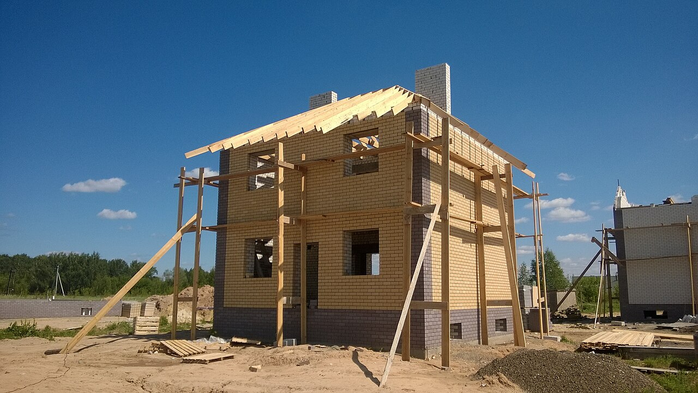
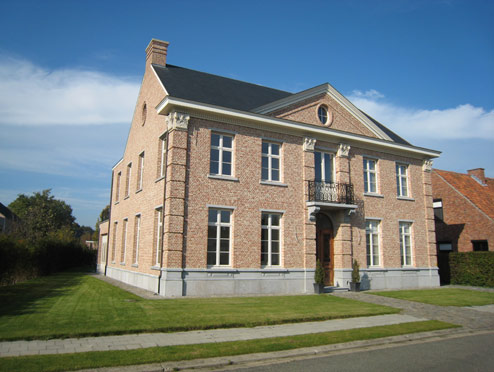
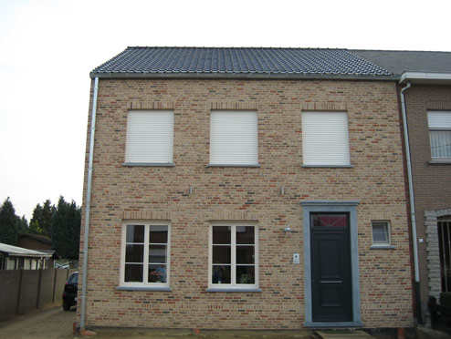
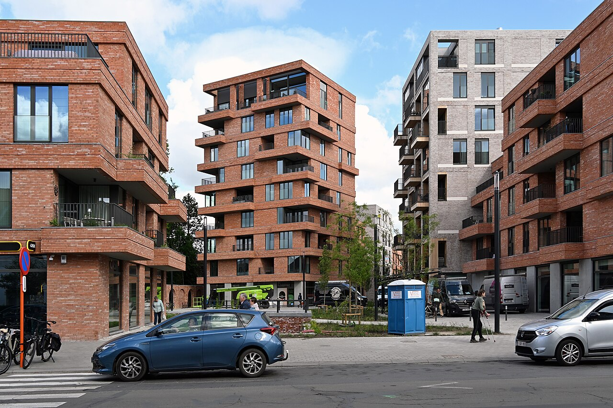
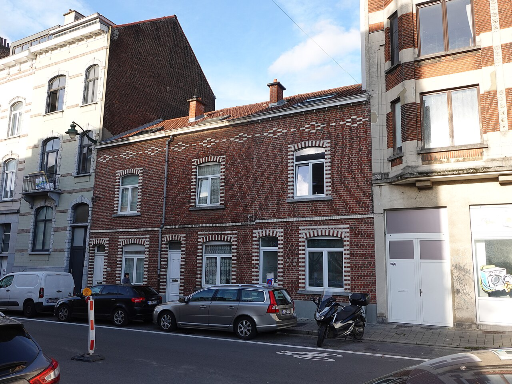
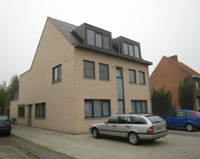
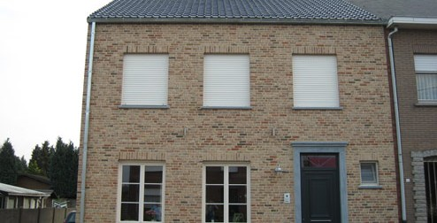

Nieuwbouw
Van de eerste plannen tot de sleuteloverdracht: wij begeleiden de volledige bouw van uw villa of woning, woonklaar opgeleverd. Doelgericht plannen, resultaatgericht werken.
Aannemer uit Nijlen — sinds 1990 vertrouwd in de streek
Bouwbedrijf Heylen is een kleinschalige aannemer gespecialiseerd in het woonklaar bouwen en renoveren van villa's, woningen en appartementen. Van ruwbouw tot afwerking: wij staan garant voor stevig vakwerk en persoonlijke opvolging.
“Doelgericht plannen, resultaatgericht werken.”
Over ons
Bouwbedrijf Heylen is een kleine, familiale onderneming, opgestart als eenmanszaak in 1990. In 2006 werd de zaak overgedragen van vader op zoon. Onze kleinschaligheid — we werken met één vaste ploeg — laat ons toe om zeer dicht bij de bouwheer te staan en elk project van kortbij op te volgen.
Als bouwheer heeft u er alle voordeel bij dat uw aannemer niet alleen makkelijk bereikbaar is, maar ook flexibel kan zijn tijdens de bouwwerken zelf. Omdat metselen een handigheid is die je niet van vandaag op morgen in de vingers hebt, staan wij garant voor professioneel afgeleverd werk. Onze jarenlange ervaring draagt hier zeker toe bij.
Onze specialisatie omvat nieuwbouw, verbouwing en appartementen. Of het nu gaat om een nieuwbouwproject, een grondige verbouwing of de bouw van een appartementsgebouw: wij denken mee van ontwerp tot oplevering.

Diensten
Van de eerste plannen tot de sleuteloverdracht: wij begeleiden de volledige bouw van uw villa of woning, woonklaar opgeleverd. Doelgericht plannen, resultaatgericht werken.
Een verouderde woning ombouwen tot een hedendaags thuis? Wij verbouwen doordacht, met respect voor de bestaande structuur en uw budget.
Ook voor de bouw van appartementsgebouwen bent u bij ons aan het juiste adres, met dezelfde persoonlijke opvolging en vakmanschap als bij een woning.
Realisaties
Een greep uit onze eigen realisaties: nieuwbouwwoningen, villa's en woningen woonklaar opgeleverd in de regio rond Nijlen.






Contact
Heeft u een bouw- of renovatieproject in gedachten? Neem gerust contact met ons op. We bespreken graag uw plannen en denken mee naar de beste oplossing.